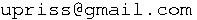

Contact Information
This website has been created by Uta Priss (Email: ).
Uta has been practicing martial arts for more than 20 years, including Wushu, Five Animal Kung Fu and Aikido. She studied Taichi Chuan with James Connachan since 2006. James learnt his Taichi Chuan from Cheng Tin Hung, Ian Cameron and Dan Docherty.
This style of Taichi Chuan is based on Wu style and is commonly called Wutan, Wudang Tai Chi Chuan or Practical Tai Chi Chuan. On this website, the name Wu Cheng is used because it reflects Cheng Tin Hung's version of Wu style.
In 1989, Uta participated in the German National Wushu Championship (in Mönchengladbach) and won first prize in the women's broadsword competition and third prize in the women's Changquan (long fist) competition. She qualified as an instructor at James Connachan's Taichi Chuan school.
In her other life, Uta is a computer scientist and can be contacted about IT consultancy for the technologies used on this website (web design, web scripting, MySQL databases, Chinese/English translation software, Unicode and Unihan-based treatment of Chinese characters).
Copyright © marama.org.uk